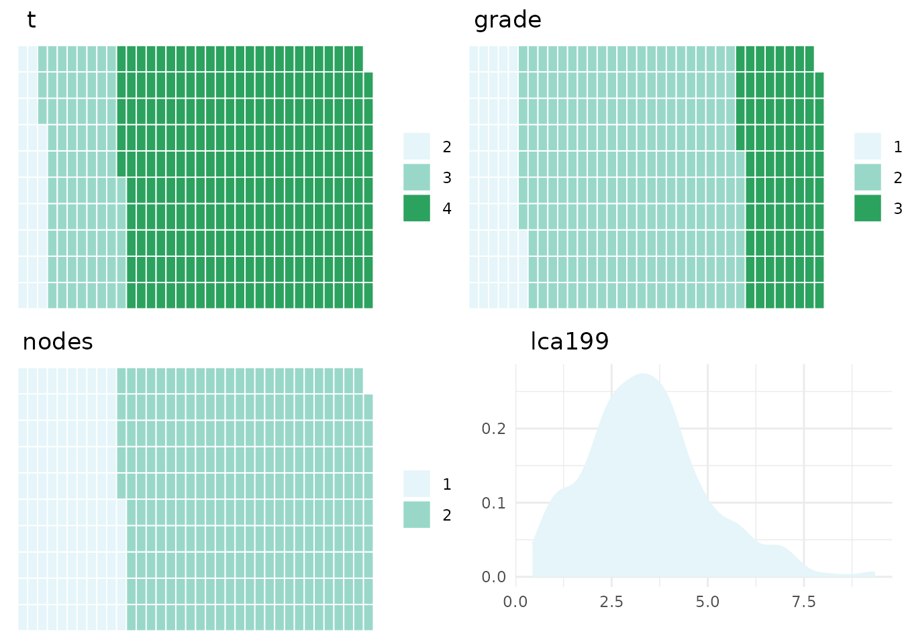
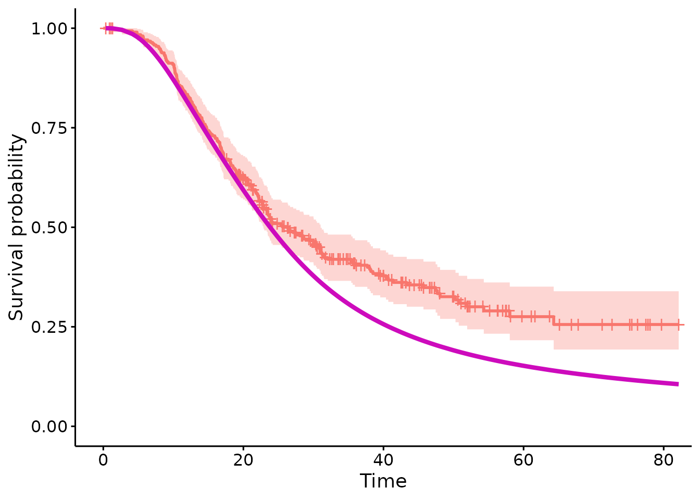

Introduction
The psc.R package implements the methods for applying Personalised Synthetic Controls, which allows for patients receiving some experimental treatment to be compared against a model which predicts their reponse to some control. This is a form of causal inference which differes from other approaches in that
Data are only required on a single treatment - all counterfactual evidence is supplied by a parametric modelCausal inference, in theory at least, is estimated at a patient level - as opposed to estimating average effects over a population
The causal estimand obtained is the Average Treatment Effect of the Treated (ATT) which differs from the Average Treatment Effect (ATE) obtained in other settings and addresses the question of whether treatments are effective in the population of patients who are treated. This estimand then targets efficacy over effectivness.
In its basic form, this method creates a likelihood to compare a cohort of data to a parametric model. See (X) for disucssion on it’s use as a causal inference tool. To use this package, two basic peices of information are required, a dataset and a model against which they can be compared.
In this vignette, we will detail how the psc.r package is constructed and give some examples for it’s application in practice.
Methodology
The pscfit function compares a dataset (‘DC’) against a
parametric model. This is done by selecting a likelihood which is
identified by the type of CFM that is supplied. At present, two types of
model are supported, a flexible parmaeteric survival model of type
‘flexsurvreg’ and a geleneralised linear model of type ‘glm’.
Where the CFM is of type ‘flexsurvreg’ the likeihood supplied is of the form:
Where defines the cumulative baseline hazard function, is the linear predictor and and are the event time and indicator variables.
Where the CFM is of the type ‘glm’ the likelihood supplied is of the form:
Where , and represent the functions of the exponential family. In both cases, is defiend as:
Where are the model coefficients supplied by the CFM and is the parameter set to measure the difference between the CFM and the DC.
Estimation is performed using a Bayesian MCMC procedure. Prior distributions for (& ) are derived directly from the model coefficients (mean and variance covariance matrix) or the CFM. A bespoke MCMC routine is performed to estimate . Please see ‘?mcmc’ for more detials.
For the standard example where the DC contains information from only a single treatment, trt need not be specified. Where comparisons between the CFM and multiple treatments are require, a covariate of treamtne allocations must be specified sperately (using the ‘trt’ option).
Package Structure
The main function for using applying Personal Synthetic Controls is the pscfit() function which has two inputs, a Counter-Factual Model (CFM) and a data cohort (DC). Further arguments include
- nsim which sets the number of MCMC iterations (defaults to 5000)
- ‘id’ if the user wishes to restrict estimation to a sub-set (or individual) within the DC
- ‘trt’ to be used as an initial identifier if mulitple treatment comparisons are to be made (please see the Mulitple Treatment Comparison below)
psc object
The output of the “pscfit()” function is an object of class ‘psc’. This class contains the following attributes
- A definition of the calss of the model supplied
- A ‘cleaned’ dataset including extracted components of the CFM and the cleaned DC included in the procedure
- An object defingin the class of model (and therefore the procedure applied - see above)
- A matrix containing the draws of the posterior distributions
Motivating Example
The psc.r package includes as example a dataset which is derived from patients with pancreatic ductal adenocarcinoma (PDAC) who have all received some experimental treatment, in this case GemCap. The dataset is named ‘e4_data’ and is loaded into the enviroment using the “data()” function
#install.packages("psc")
library(psc)
library(ggpubr)
#> Loading required package: ggplot2
e4_data <- psc::e4_dataIncluded is a list of prognostic covariates:
- nodes: patient lymph node status; negative (n=1) or positive (n=2) lymph nodes
- grade: tumour grade; 1,2 or 3
- lca199: log transformed ca19.9
- t: T-stage; (1,2 or 3)
Also included are the following structures
- time - survival time
- cen - censoring indictor
We give esamples of how the ‘pscfit()’ function can be used to comapre data against models with survival outcomes (with a ‘flexsurvreg’ model). Examples on how to perform analyses using GLM model objects are available from the github repo https://github.com/richJJackson/psc
Survival Example
For an example with a survival outcome a model must be supplied which is contructed ont he basis of flexible parametric splines. This is contructed using the “flexsurvreg” function within the “flexsurv” package. An example is included within the ‘psc.r’ package names ‘surv.mod’ and is loaded using the ’data()” function:
#emCFM <- psc::gemCFMThe ‘gemCFM’ is an object of calss pscCFM which means it contains all of the structures required for analysis but has stripped the model object of any patient level data. Included instead are a summary table:
gemCFM$datasumm
#> A Summary Table[1] "summ_Table"…and a set of visualisations which we arrange using the ggarrange
ggarrange(plotlist=gemCFM$datavis)
In this example you can see that this is a model constructed with 3 internal knots and hence 5 parameters to describe the baseline cumulative hazard function. There are also prognostic covariates which match with the prognostic covariates in the data cohort.
Comparing the dataset to the model is then performed using
and we can view the attributes of the psc object that is created
attributes(surv.psc)
#> $names
#> [1] "model.type" "DC_clean" "posterior"
#>
#> $class
#> [1] "psc"For example to view the matrix contianing the draws of the posterior distribution we use
surv.post <- surv.psc$posterior
head(surv.post)
#> gamma0 gamma1 gamma2 gamma3 gamma4 t3 t4
#> 1 -10.183475 2.886891 0.32844796 -0.5849253 0.55252918 0.5605011 0.4197932
#> 2 -10.374219 2.921543 0.35192056 -0.6365481 0.58544703 0.3962898 0.2498031
#> 3 -10.965218 2.788057 -0.06478021 -0.1637076 0.50457712 0.8416433 0.6618134
#> 4 -10.837710 3.478723 1.00099147 -1.8249162 1.28273268 0.3830648 0.3742471
#> 5 -10.186945 2.932136 -0.26218258 0.5825346 -0.09242458 0.1376766 0.2445612
#> 6 -9.347187 2.542036 0.30628179 -0.5125706 0.45910993 0.8832303 0.7760956
#> grade2 grade3 nodes2 lca199 beta DIC
#> 1 0.4117679 0.7335891 0.4861837 0.20571716 -0.2429918 NA
#> 2 0.5187969 0.9038129 0.7217757 0.20592879 -0.1972145 839.3385
#> 3 0.2646033 0.7761573 0.7368542 0.24363784 -0.1991925 849.5411
#> 4 0.1709291 0.4459290 0.3303669 0.18685758 -0.1991925 846.2865
#> 5 0.2749036 0.4610892 0.3754181 0.25901970 -0.1991925 842.9351
#> 6 0.4475706 1.1129677 0.6109946 0.08936575 -0.1467539 856.0669Inspection will show that there is a column for each parameter in the original model as well as ‘beta’ and ‘DIC’ vcolumns which give teh posterior estiamtes for and the Deviance Informaiton Criterion respectively.
We can inspect the poterior distribution using the autocorrelation function, trace and stardard summary statistics:
Autocorrelation
acf(surv.post$beta)Trace
plot(surv.post$beta,typ="s")Summary
Standard ‘summary()’ function wil summarise the model fit
summary(surv.psc)
#> Summary:
#>
#> 311 observations selected from the data cohort for comparison
#> CFM of type flexsurvreg identified
#> linear predictor succesfully obtained with median:
#> trt: 1.786
#> Average expected response:
#> trt: 30.077
#> Average observed response: 26.327
#>
#> Counterfactual Model (CFM):
#> A model of class 'flexsurvreg'
#> Fit with 3 internal knots
#>
#> Formula:
#> s.ob ~ t + grade + nodes + lca199
#> <environment: 0x55dca2c836d8>
#>
#> Call:
#> CFM model + beta
#>
#> Coefficients:
#> median 2.5% 97.5% Pr(x<0) Pr(x>0)
#> beta -0.25020 -0.44084 -0.06284 0.99520 0.00480
#> DIC 844.64311 837.88243 857.62927 NA NATo visualise the original model and the fit of the data, the plot function has been developed
plot(surv.psc)